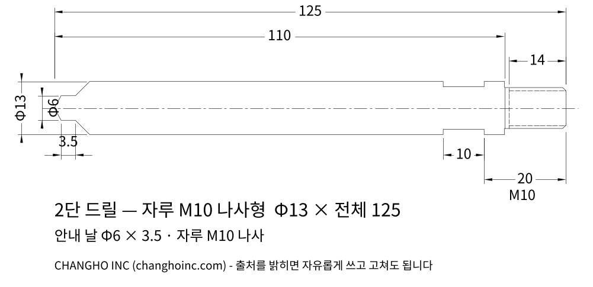

기계 배움터 · 도면 · 기초 5
도면 기초 5 — 치수 넣는 법
그림으로 물건의 모양을 정했으면, 이제 크기를 적을 차례입니다. 도면에 적힌 숫자를 치수라고 하고, 만드는 사람은 그림의 크기가 아니라 이 숫자를 보고 재료를 자르고 구멍을 뚫습니다. 이 글에서는 치수를 이루는 선과 숫자, 숫자를 적는 방향, Φ·R·C 같은 기호, 치수를 늘어놓는 방법, 구멍 치수, 지켜야 할 규칙을 그림과 연습 문제로 살펴봅니다.
치수가 하는 일
만드는 사람은 그림의 크기가 아니라 숫자를 보고 만듭니다
도면 그림은 종이에 맞추어 줄이거나 키워서 그리는 일이 많습니다. 「도면이 하는 일」 글에서 배운 척도가 그것입니다. 그래서 그림을 자로 재서 크기를 알아내면 안 되고, 반드시 적힌 숫자를 봐야 합니다. 그림과 숫자가 서로 다르게 보이면 숫자가 기준입니다.
기계 도면의 길이는 모두 mm 단위로 적고, 숫자 뒤에 「mm」를 붙이지 않습니다. 「140」이라고 적혀 있으면 140 mm입니다. 각도만은 「45°」처럼 도(°) 표시를 붙입니다.
치수를 이루는 것
치수선·치수 보조선·화살표·숫자가 한 묶음입니다
치수 하나는 여러 선과 숫자가 모여서 만들어집니다. 물건의 모양을 나타내는 외형선은 굵은 실선이고, 치수에 쓰는 선은 모두 가는 실선입니다. 굵기가 달라서 어느 선이 물건이고 어느 선이 치수인지 바로 구별할 수 있습니다.
140
60
Φ20
1
2
3
4
5
6
1
치수선
가는 실선 · 재는 길이와 나란히 긋습니다
2
치수 보조선
가는 실선 · 재는 곳에서 끌어냅니다
3
끝 기호(화살표)
치수선 양 끝에서 보조선에 닿습니다
4
치수 숫자
단위 mm · 「mm」는 적지 않습니다
5
지시선
가는 실선 · 구멍 등에 글자로 알려 줍니다
6
외형선
굵은 실선 · 물건의 모양입니다
직접 그린 그림 · 구멍 하나가 뚫린 판의 도면입니다. 번호가 붙은 것이 치수를 이루는 선과 숫자입니다.
치수 보조선 — 재는 곳의 양 끝에서 물건 바깥으로 끌어낸 가는 실선입니다. 외형선과 조금 띄워서 시작하고, 치수선보다 2~3 mm쯤 더 나가게 긋습니다.치수선 — 재는 길이와 나란히, 두 치수 보조선 사이에 긋는 가는 실선입니다. 물건에서 조금 떨어진 곳에 긋습니다.끝 기호 — 치수선 양 끝에 그려 치수 보조선에 닿게 합니다. 기계 도면에서는 보통 화살표를 그립니다.치수 숫자 — 치수선 가운데, 치수선에서 조금 띄운 자리에 적습니다. 한 도면 안에서는 숫자 크기를 같게 맞춥니다.지시선 — 구멍처럼 치수선을 긋기 어려운 곳에 비스듬히 끌어낸 가는 실선입니다. 끝을 가로로 꺾고 그 위에 「Φ20」처럼 글자로 적습니다.
숫자 적는 법
가로 치수는 아래에서, 세로 치수는 오른쪽에서 읽도록 적습니다
도면은 아래쪽과 오른쪽에서 읽는다고 생각하고 숫자를 적습니다. 가로 치수의 숫자는 치수선 위에 똑바로 적고, 세로 치수의 숫자는 치수선 왼쪽에 왼쪽으로 돌려서 적습니다. 도면을 시계 방향으로 90도 돌려 보면 세로 숫자가 똑바로 읽힙니다. 기울어진 치수는 치수선을 따라 기울여 적습니다.
100
70
40
50
가로 치수: 아래에서 읽습니다
세로 치수: 오른쪽에서 읽습니다(왼쪽으로 돌려 적음)
기울어진 치수: 치수선을 따라 적습니다
숫자를 적는 방향
치수 사이가 좁을 때
40
57
3
사이가 좁으면 화살표를 바깥에서 안쪽으로 긋고,
숫자는 치수선을 늘려 그 옆에 적습니다
직접 그린 그림 · 왼쪽은 숫자를 적는 방향, 오른쪽은 치수 사이가 좁을 때 적는 방법입니다. 홈처럼 폭이 아주 좁은 곳은 치수선 안에 화살표와 숫자가 들어갈 자리가 없습니다. 이럴 때는 화살표를 치수 보조선 바깥에서 안쪽을 향하게 긋고, 치수선을 바깥으로 늘려 그 옆에 숫자를 적습니다. 좁은 치수가 여러 개 이어지면 화살표 대신 작은 검은 점이나 짧은 사선을 끝 기호로 쓰기도 합니다.
치수 기호
숫자 앞에 기호를 붙여 모양까지 함께 알려 줍니다
「20」이라는 숫자만으로는 그것이 길이인지, 둥근 막대의 지름인지 알 수 없습니다. 그래서 숫자 앞에 모양을 알려 주는 기호를 붙입니다. 기호를 붙이면 그림 한 장만으로도 둥근지 네모난지 알 수 있어, 그려야 할 그림 수가 줄어듭니다.
Φ
지름
둥근 막대를 옆에서 본 그림
R
반지름
둥글게 깎은 모서리
□
정사각형의 한 변
네모 막대를 옆에서 본 그림
C
45도 모따기
모서리를 비스듬히 깎은 곳
t
판 두께
얇은 판을 위에서 본 그림
SΦ
구의 지름
공처럼 둥근 끝
Φ20
R10
□20
C3
t6
SΦ30
직접 그린 그림 · 자주 쓰는 치수 기호 여섯 가지입니다. 둥근 막대와 네모 막대를 옆에서 본 그림은 모양이 같은 직사각형이지만, 기호 Φ와 □로 구별됩니다.
기호 뜻 적는 예
Φ 지름 — 둥근 막대나 구멍의 지름입니다. 원이 아니라 옆모습으로 그린 그림에도 붙입니다 Φ20 = 지름 20 mm R 반지름 — 둥글게 깎은 모서리나 원의 일부(원호)의 반지름입니다. 화살표는 원호 쪽에만 그립니다 R10 = 반지름 10 mm □ 정사각형의 한 변 — 네모 막대처럼 단면이 정사각형인 곳에 붙입니다 □20 = 한 변 20 mm 정사각형 C 45도 모따기 — 모서리를 45도로 비스듬히 깎은 곳입니다. 45도가 아닌 모따기에는 쓰지 않습니다 C3 = 가로 3 mm, 세로 3 mm를 깎음 t 판 두께 — 판을 위에서 본 그림 한 장으로 끝낼 때, 그림 안이나 옆에 두께를 적습니다 t6 = 두께 6 mm SΦ · SR 구의 지름 · 구의 반지름 — 공처럼 둥근 곳에 붙입니다 SΦ30 = 지름 30 mm인 공 모양
숫자를 괄호로 묶은 「(15)」 같은 치수는 참고 치수 입니다. 다른 치수로 계산할 수 있지만 보는 사람이 편하도록 덧붙인 것이라, 만들 때 기준으로 삼지 않습니다.
늘어놓는 방법
치수를 어디에서부터 재느냐에 따라 세 가지로 늘어놓습니다
구멍 여러 개의 자리를 적을 때는 치수를 어떻게 이어 갈지 정해야 합니다. 같은 판이라도 늘어놓는 방법에 따라 도면이 달라지고, 자르거나 뚫을 때 생기는 작은 어긋남(오차)이 쌓이는 모습도 달라집니다.
30
40
50
160
직렬 치수
구멍에서 구멍까지 이어서 적습니다
앞의 치수가 틀리면 뒤로 갈수록 어긋납니다
30
70
120
160
기준면
병렬 치수
한 기준면(왼쪽 끝)에서 따로따로 잽니다
치수 하나가 틀려도 다른 치수에 번지지 않습니다
30
70
120
160
0
누진 치수
병렬 치수를 치수선 한 줄로 줄인 것입니다
작은 동그라미가 기준점(0)입니다
직접 그린 그림 · 구멍 세 개가 뚫린 같은 판에 치수를 넣는 세 가지 방법입니다.
직렬 치수 — 구멍에서 구멍까지 사슬처럼 이어서 적습니다. 구멍 사이 거리가 중요할 때 알맞습니다. 다만 치수마다 생기는 오차가 뒤로 갈수록 더해집니다. 그래서 마지막 구멍에서 끝까지는 비워 두고 전체 길이 160을 따로 적었습니다.병렬 치수 — 한 기준면에서 모든 자리를 따로따로 잽니다. 치수 하나에 생긴 오차가 다른 치수에 번지지 않습니다. 치수선이 여러 줄로 늘어나는 것이 단점입니다.누진 치수 — 병렬 치수와 뜻은 같고, 치수선 한 줄로 줄여 적습니다. 기준점에 작은 동그라미를 그리고, 기준점에서 잰 거리를 화살표 끝마다 적습니다.
병렬 치수와 누진 치수에서 기준이 되는 면은 보통 가공을 시작할 때 맞추는 면이나 다른 부품과 맞닿는 면으로 고릅니다. 절단기의 길이 멈춤판에 자재 끝을 대고 자르듯이, 현장에서도 한 기준에서 길이를 재는 일이 많습니다.
구멍 치수
구멍은 지시선으로 지름·개수·깊이를 한 번에 적습니다
「단면도」 글의 연습용 블록에 치수를 넣어 보았습니다. 구멍은 원으로 보이는 평면도에서 지시선을 끌어내 적거나, 속이 보이는 단면도에서 치수선으로 적습니다.
평면도
15
25
25
80
50
2-Φ10
Φ30 깊이 12
정면도(단면도)
Φ30
Φ16
12
40
직접 그린 그림 · 앞 글의 연습용 블록입니다. 왼쪽 평면도에는 구멍 자리와 지시선, 오른쪽 단면도에는 구멍의 지름과 깊이를 적었습니다.
같은 구멍이 여러 개 — 「2-Φ10」처럼 개수와 지름 사이에 짧은 선(-)을 넣어 적습니다. 지름 10 mm 구멍이 2개라는 뜻입니다. 「2×Φ10」으로 적는 도면도 있습니다.깊이가 있는 구멍 — 바닥까지 뚫리지 않은 구멍은 「Φ30 깊이 12」처럼 지름 뒤에 깊이를 적습니다.구멍 자리 — 구멍의 가장자리가 아니라 중심을 잽니다. 그래서 구멍 자리 치수의 보조선은 구멍의 중심선에서 끌어냅니다.
나사 구멍은 「M10」처럼 나사 이름으로 적습니다. 나사를 그리고 적는 방법은 도면 기초 7 「나사·볼트 그리는 법」에서 따로 다룹니다.
지켜야 할 규칙
필요한 치수를 한 번씩만, 읽기 쉬운 자리에 적습니다
치수가 빠지면 만들 수 없고, 같은 치수가 두 번 있으면 둘이 어긋났을 때 어느 쪽을 따라야 할지 알 수 없습니다. 아래 왼쪽 그림에는 도면에서 흔히 보이는 실수 네 가지가 들어 있습니다.
고쳐야 할 그림
55
80
25
Φ16
60
20
1
2
3
4
바르게 고친 그림
25
80
20
60
구멍 Φ16 은 구멍이 원으로 보이는 평면도에 적습니다
직접 그린 그림 · 왼쪽 그림의 번호는 아래 목록의 번호와 같습니다. 오른쪽은 같은 물건을 바르게 고친 그림입니다.
1. 같은 길이를 두 번 적지 않습니다 — 위쪽 25와 아래쪽 55를 더하면 전체 80이 됩니다. 셋을 모두 적으면 같은 치수가 겹쳐 들어간 것입니다. 보통 전체 치수를 남기고 하나를 빼며, 꼭 함께 보여야 하면 괄호로 묶어 참고 치수로 적습니다.2. 외형선을 치수선으로 쓰지 않습니다 — 치수선은 물건에서 떨어진 곳에 따로 긋습니다. 중심선도 치수선으로 쓰지 않습니다. 다만 외형선과 중심선을 치수 보조선 대신 쓰는 것은 괜찮습니다.3. 숨은선에는 되도록 치수를 넣지 않습니다 — 구멍의 지름은 구멍이 원으로 보이는 평면도나, 속이 보이는 단면도에 적습니다.4. 작은 치수는 안쪽, 큰 치수는 바깥쪽에 둡니다 — 반대로 두면 치수 보조선이 치수선을 가로지릅니다. 오른쪽 그림처럼 20을 안쪽, 60을 바깥쪽에 두면 선이 엇갈리지 않습니다.
이 밖에도 치수는 되도록 모양이 가장 잘 보이는 그림, 보통 정면도에 모아 적고, 만드는 사람이 더하거나 빼서 계산하지 않아도 되도록 필요한 치수를 그대로 적습니다.
회사 도면에서 보기
부품 도면 자료실의 2단 드릴 도면에서 치수를 읽어 봅니다
창호종합기계 부품 도면 자료실 에 올린 2단 드릴 Φ13×125(자루 M10) 도면입니다. 2단 드릴은 앞쪽의 가는 안내 날과 뒤쪽의 굵은 몸통으로 구멍을 두 번에 걸쳐 넓히는 드릴이고, 맨 뒤에는 기계에 고정하는 자루가 있습니다.

창호종합기계가 그린 도면 · 2단 드릴 Φ13×125(자루 M10)
병렬 치수 — 위쪽의 125(전체 길이)와 110(드릴 끝에서 몸통 끝까지)은 둘 다 왼쪽 끝에서 잰 치수입니다. 드릴 끝을 기준면으로 삼은 병렬 치수입니다.지름 기호 — 왼쪽의 Φ13은 몸통 지름, Φ6은 안내 날 지름입니다. 드릴을 옆에서 본 그림이라 원이 보이지 않지만, Φ가 붙어 있어 둥근 막대라는 것을 알 수 있습니다. 세로 치수라 숫자를 왼쪽으로 돌려 적었습니다.좁은 치수 — 안내 날 길이 3.5는 짧아서 화살표가 들어갈 자리가 없으므로 화살표를 치수 보조선 바깥에서 안쪽으로 그었습니다.나사 — 오른쪽 자루 끝의 M10은 자루에 낸 나사의 이름이고, 위쪽 오른쪽의 14는 나사를 낸 길이입니다.
이 도면을 캐드(컴퓨터 제도 프로그램)에서 여는 파일(DXF)과 인쇄용 PDF는 2단 드릴 쪽에서 무료로 받을 수 있습니다. 다른 규격의 도면도 같은 방식으로 치수를 넣었으니, 규격마다 어느 숫자가 달라지는지 비교해 보셔도 좋습니다.
직접 읽어 보기
아래 받침판 도면의 치수를 읽어 보세요
얇은 판에 구멍을 뚫은 받침판을 위에서 본 도면입니다. 파란 글자 가~마가 붙은 곳을 보고 답을 생각해 본 뒤, 문제를 눌러 확인해 주세요.
120
15
90
(15)
70
15
40
4-Φ9
Φ30
R10
C5
t6
가
나
다
라
마
직접 그린 그림 · 연습 문제용 도면입니다. 파란 글자는 문제를 위해 붙인 표시이고, 실제 도면에는 없습니다. 1. 이 받침판의 가로, 세로, 두께는 몇 mm인가요? 가로 120 mm, 세로 70 mm입니다. 두께는 라의 「t6」에서 6 mm라는 것을 알 수 있습니다. 판을 위에서 본 그림 한 장으로 끝냈기 때문에 두께를 t로 적었습니다.
2. 가의 「4-Φ9」는 무슨 뜻인가요? 지름 9 mm 구멍이 4개라는 뜻입니다. 네 귀퉁이의 구멍은 크기가 같으므로 지시선 하나로 한 번에 적었습니다. 가운데의 큰 구멍은 따로 Φ30, 곧 지름 30 mm로 적었습니다.
3. 나의 「R10」과 다의 「C5」는 모서리를 어떻게 다듬은 것인가요? R10은 위쪽 두 모서리를 반지름 10 mm로 둥글게 다듬은 것입니다. C5는 아래쪽 두 모서리를 45도로 비스듬히, 가로 5 mm와 세로 5 mm만큼 깎은 것입니다.
4. 구멍 중심 사이의 거리는 가로와 세로로 각각 몇 mm인가요? 가로는 아래쪽의 90, 세로는 오른쪽의 40에서 가로 90 mm, 세로 40 mm입니다. 구멍 자리는 구멍의 중심에서 잽니다.
5. 마의 「(15)」는 왜 괄호로 묶었나요? 참고 치수이기 때문입니다. 120 − 15 − 90 = 15로 다른 치수에서 계산할 수 있어, 그대로 적으면 같은 치수가 겹쳐 들어갑니다. 보는 사람이 편하도록 괄호로 묶어 참고로만 적었습니다.
6. 왼쪽 「70」과 오른쪽 「40」은 어느 쪽에서 읽도록 적은 것인가요? 오른쪽에서 읽도록 적었습니다. 세로 치수의 숫자는 왼쪽으로 돌려 적으므로, 도면을 오른쪽으로 돌려 보면 똑바로 읽힙니다.
정리
이번 글에서 배운 것
만드는 사람은 그림의 크기가 아니라 적힌 숫자를 보고 만듭니다. 길이는 mm 단위로 적고 「mm」는 붙이지 않습니다.
치수는 치수 보조선, 치수선, 화살표, 치수 숫자로 이루어지고, 모두 가는 실선으로 긋습니다. 구멍처럼 치수선을 긋기 어려운 곳은 지시선으로 적습니다.
가로 치수는 아래에서, 세로 치수는 오른쪽에서 읽도록 숫자를 적습니다. 좁은 곳은 화살표를 바깥에서 안쪽으로 긋습니다.
Φ(지름), R(반지름), □(정사각형), C(45도 모따기), t(두께), SΦ(구의 지름)를 숫자 앞에 붙여 모양을 함께 알려 줍니다. 괄호로 묶은 치수는 참고 치수입니다.
치수는 직렬·병렬·누진 치수 가운데 알맞은 방법으로 늘어놓습니다. 병렬·누진 치수는 한 기준에서 잽니다.
같은 치수를 두 번 적지 않고, 외형선을 치수선으로 쓰지 않으며, 작은 치수를 안쪽에 둡니다.
다음에 배울 것 — 도면 기초 6 「조립도와 부품도」 : 여러 부품을 맞추어 그린 조립도와 부품 하나하나를 그린 부품도가 무엇이 다른지, 부품 번호와 부품표를 어떻게 읽는지 살펴봅니다.
참고
자료와 그림에 대하여
이 글의 그림 7장은 창호종합기계가 이 글을 위해 직접 그렸습니다. 교과서·교재의 문장과 그림은 옮기지 않았습니다.
2단 드릴 도면은 창호종합기계가 직접 그려 부품 도면 자료실에 올린 것입니다. 출처를 밝히면 누구나 자유롭게 쓰고 고칠 수 있습니다.
치수를 이루는 선, 숫자를 적는 방향, 치수 기호와 늘어놓는 방법은 한국산업표준의 제도 규칙을 기준으로 정리했습니다. 구멍 깊이는 글자로 적는 방법을 보였습니다.
연습용 블록·받침판과 치수 숫자는 설명을 위해 꾸민 예시입니다.